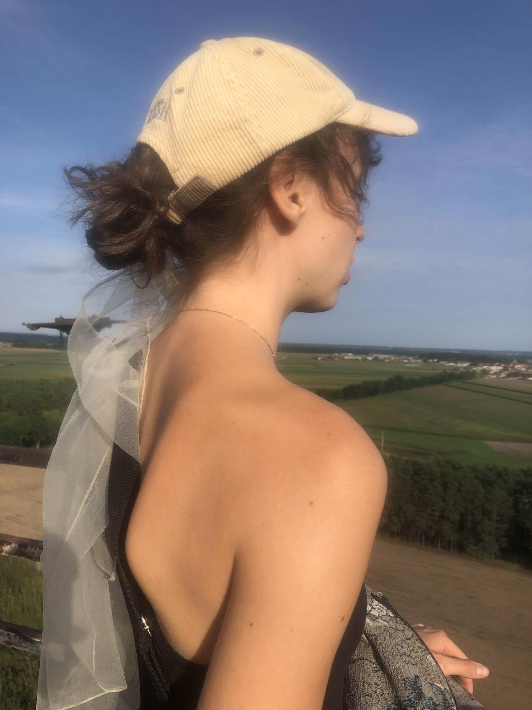
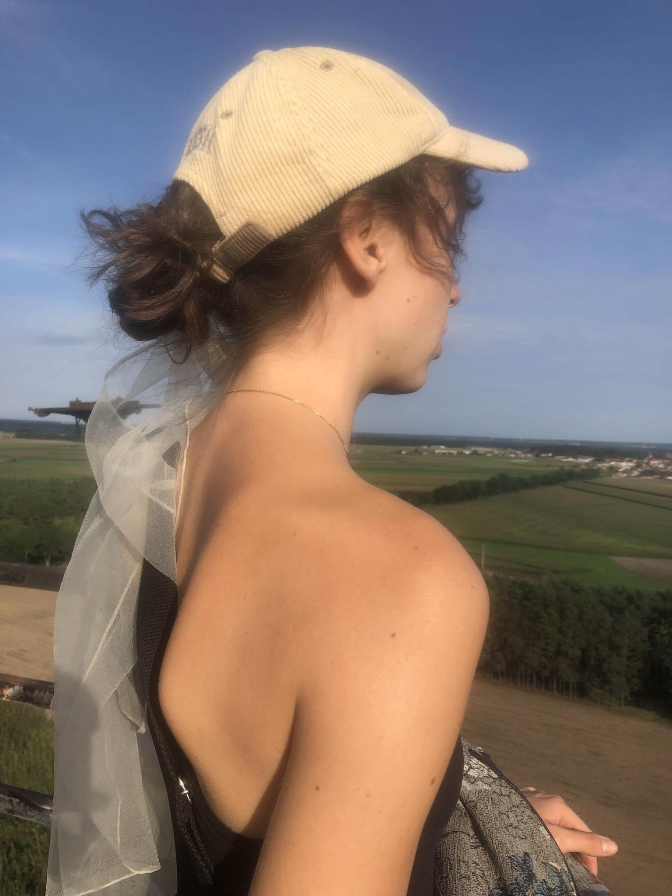

Dobrze, jeszcze raz.
Świat nie może przestać rosnąć. Poddałam się temu i postanowiłam pragnąć bez końca szukając drogi, która zaprowadzi mnie do wypełnienia, którego nigdy nie posiadałam. Szukam symboli, które sprawią, że znów będę cała. Ukończenie studiów, poważna praca, własne mieszkanie pełne znaków mojej obecności, świadomość, że ktoś też kocha mnie, tak jak ja kocham świat wokół siebie, osoba, której częścią jestem, która widzi mnie i ogród, który rośnie wewnątrz. Koło tego świata nigdy się nie zamknie, a na jego miejsce powstanie niekończąca się spirala. Ah, ile jeszcze? Ile wersów będę musiała napisać, ile sukienek będę musiała założyć na plażę, ile nic nie znaczących rozmów będę musiała przeprowadzić? Ile bólu znieść? Ile jestem w stanie wytrzymać?
Potrzebuję odpocząć, ale nie potrafię odpocząć, kiedy czuję otwartą dziurę w moim brzuchu. Rosnę i przybliżam się a potem maleję i znów oddalam. Oscyluję między życiem a śmiercią, rozchwiana jednocześnie w banalnościach i epickich bitwach tego świata. Stale pomiędzy brzydotą i pięknem, odrazą i pragnieniem rosną moje kwiaty i krzewy a pomiędzy nimi chwasty, których nie mam siły zerwać, albo może po prostu je lubię. Czasem czuję w sobie cały istniejący ciężar i nie mam gdzie go położyć ani zakopać, więc noszę go stale przy sobie. Nie potrafię odpuścić, bo może tym razem się uda. Moje życzenie zostanie spełnione i stanę się tak ludzka jak to tylko możliwe, albo stanę się posągiem, pięknym i niedostępnym. Na razie wciąż jestem pomiędzy, odbijając się od ścian jak zwierzę zamknięte w klatce, ale tak mało brakuje, dopóki coś znów nie wypadnie mi z rąk i znów będę musiała przewartościować całe swoje życie. Niech i tak będzie. Jestem zbyt zmęczona, żeby walczyć.